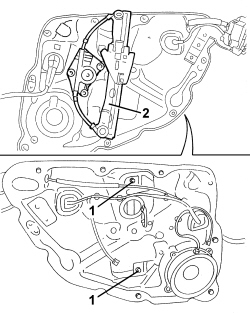

7010M27 ELECTRIC WINDOW MECHANISM FOR ONE REAR DOOR LH OR RH - R.R. WITH SUPPORT FRAME REMOVED
- Path
- Procedures > 70 FITTINGS > 7010 PASSENGER COMPARTMENT REAR SIDE DOORS > 7010M REAR SIDE DOOR ELECTRIC WINDOWS > 7010M27 ELECTRIC WINDOW MECHANISM FOR ONE REAR DOOR LH OR RH - R.R. WITH SUPPORT FRAME REMOVED
- Kind
- repair procedure (removal / refitting; the operation number is the code)
- Applies to
- all engines; all production periods
- Interactive page
- https://sloeber94.github.io/elrnDB/#/939011199
Applies to: all engines; all production periods
 Removing
Removing
 Refitting
RefittingOp. 7010M20 REAR DOOR ELECTRIC WINDOW, LEFT OR RIGHT - R.R. WITH DOOR PANEL/SUPPORT FRAME REMOVED
- Mark the position of the wind lift mechanism to avoid incorrect refitting.
1. Loosen the nuts fixing the window opening mechanism.
2. Remove the window opening mechanism.

Applies to: all engines; all production periods
Refitting
Removing- Check that the window opening mechanism is not damaged.
- Position the electric window mechanism and secure it using the nuts.
Op. 7010M20 REAR DOOR ELECTRIC WINDOW, LEFT OR RIGHT - R.R. WITH DOOR PANEL/SUPPORT FRAME REMOVED